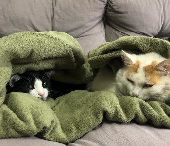

Juligor 💘
Um site criado especialmente com objetivo nenhum. Apenas para encher linguiça mesmo.
Porém, hoje vamos falar sobre o casal, JulIgor

Julyane e Igor se conheceram através do aplicativo de relacionamentos Tinder.
Se encontraram pela primeira vez na cidade de Ponta Grossa, no dia 08 de agosto de 2020, mais precisamente às 19:00 hs.
Desde então, os dois mantém um relacionamento fechado,onde dividem um modesto sobrado com seus dois filhos, Baby e Toquinho 🐱, foto abaixo:

, para conhecer mais sobre Julyane!
, para conhecer mais sobre Igor